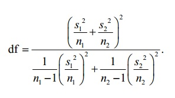

Compute Degrees of Freedom for the Two-Sample t-test/Confidence Interval
Enter in the sample sizes (n1, n2) and
sample standard deviations (s1, s2) and
click "Compute df" to calculate the degrees of freedom for the t distribution
for comparing two means:

Adapted from http://web.utk.edu/~cwiek/TwoSampleDoF